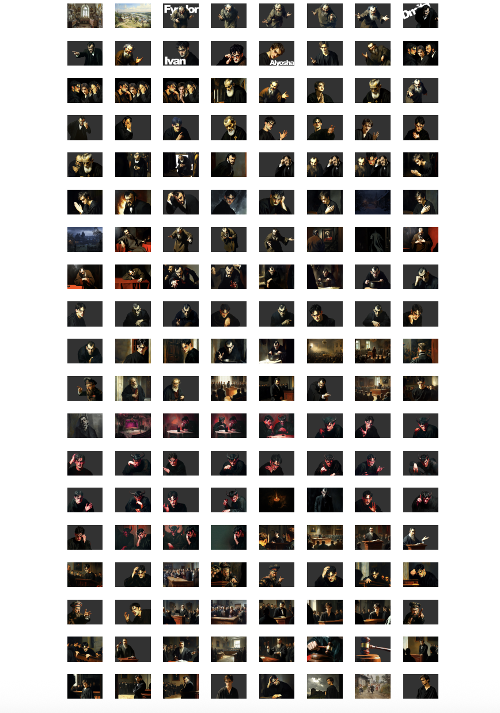

Documentation
Intention
The project attempts to create a 3D animation based on Fyodor Dostoevsky's novel The Brothers Karamazov through the WEBGL javascript library.
Code
index.html
<!DOCTYPE html>
<html lang="en">
<head>
<script src="https://cdn.jsdelivr.net/npm/p5@1.11.4/lib/p5.js"></script>
<script src="https://cdnjs.cloudflare.com/ajax/libs/p5.js/1.11.1/addons/p5.sound.min.js"></script>
<link rel="stylesheet" type="text/css" href="style.css" />
<meta charset="utf-8" />
</head>
<body>
<main></main>
<script src="preload.js"></script>
<script src="excerpt.js"></script>
<script src="Text.js"></script>
<script src="Word.js"></script>
<script src="Grid.js"></script>
<script src="camera.js"></script>
<script src="subtitles.js"></script>
<script src="scenes/opening.js"></script>
<script src="scenes/scene1.js"></script>
<script src="scenes/scene2.js"></script>
<script src="scenes/scene3.js"></script>
<script src="scenes/scene4.js"></script>
<script src="scenes/scene5.js"></script>
<script src="scenes/scene6.js"></script>
<script src="scenes/scene7.js"></script>
<script src="scenes/scene8.js"></script>
<script src="scenes/scene9.js"></script>
<script src="scenes/scene10.js"></script>
<script src="scenes/closing.js"></script>
<script src="sketch.js"></script>
</body>
</html>
Text.js
The goal of this module is to manipulate image pixels as 3D text-based elements. Inspired by the Animated Images Experiment-3d, this code represents image data as objects in a 2D array, with each object holding properties like position (x, y, z), RGB color, and opacity.
wclass Text {
constructor({ x, y, z, rgb, letter } = {}) {
this.size = 6;
this.originalX = x;
this.originalY = y;
this.position = createVector(x, y, z);
this.rgb = createVector(rgb[0], rgb[1], rgb[2]);
this.opacity = 255;
this.targetRgb = undefined;
this.letter = letter;
this.angle = 0;
this.appear = true;
this.activate = false;
this.originalZ = random(-1, 1);
}
get x() {
return this.position.x;
}
get y() {
return this.position.y;
}
get z() {
return this.position.z;
}
show() displays the Text object as a letter, using its RGB and opacity values to style the text.
show() {
if (mode == "text") {
push();
textSize(this.size);
translate(this.x, this.y, this.z);
if (this.rgb.x != undefined) {
fill(this.rgb.x, this.rgb.y, this.rgb.z, this.opacity);
text(this.letter, 0, 0);
}
pop();
}
}
setTargetColor(r, g, b): Sets the desired target RGB color for the object.
changeColor(v, r, g, b): Gradually adjusts the current color toward a target color using vector calculations.
setPicText(img): Reads a pixel from an image and assigns its color to the text object, while checking whether it should appear or not based on its proximity to the color of the "green screen," which is set to rgb(50,50,50).
setTargetColor(r, g, b) {
this.targetRgb = createVector(r, g, b);
}
changeColor(v,r,g,b){
let target = createVector(r,g,b);
if (!p5.Vector.equals(target, this.rgb)) {
let direction = p5.Vector.sub(target, this.rgb);
direction.setMag(target.dist(this.rgb));
direction.limit(v);
this.rgb.add(direction);
}
}
setPicText(img) {
let pixelNum = calculatePixel(
round(this.x) + (XSPACING * GRIDHEIGHT) / 2 + 1,
round(this.y) + (YSPACING * GRIDWIDTH) / 2 + 1,
img.width
);
if (pixels[pixelNum] != undefined) {
if (
abs(img.pixels[pixelNum] - 50) < 1 &&
abs(img.pixels[pixelNum + 1] - 50) < 1 &&
abs(img.pixels[pixelNum + 2] - 50) < 1
) {
this.appear = false;
} else {
this.setTargetColor(
img.pixels[pixelNum],
img.pixels[pixelNum + 1],
img.pixels[pixelNum + 2]
);
this.appear = true;
}
}
}
resetPositionText(v): Moves the object back to its original position over time.
resetColorText(): Resets visibility, activation, and target color state to prepare for the next image to draw.
resetPositionText(v) {
this.position.add(
createVector(
(this.originalX - this.x) / v,
(this.originalY - this.y) / v,
(this.originalZ - this.z) / v
)
);
}
resetColorText() {
this.appear = true;
this.activate = false;
this.targetRgb = undefined;
}
Transformation functions manage how the color and opacity of text objects change to reflect transitions between images:
appearText(v): Gradually increases opacity and adjusts color to the target.
fadeInText(v): Similar to appearText but activates the object and adds a fallback grayscale color if no target exists.
fadeOutText(v, original): Transitions the color back to a given original RGB value if visible.
spreadInText(v, sv, cross): Starts from a central point and draws the surrounding pixels in a spreading outward motion.
spreadOutText(v, sv, cross, target): Reverses spreadInText, transitioning the color while deactivating neighbors.
slideInText(v, sv, direction, cross): Creates a directional wave of activation across text objects.
slideOutText(v, sv, direction, cross, target): Reverse slide effect that restores a given color and resets activation.
appearText(v) {
if (this.rgb != undefined && this.targetRgb != undefined) {
if (this.appear) {
if (!p5.Vector.equals(this.targetRgb, this.rgb)) {
let direction = p5.Vector.sub(this.targetRgb, this.rgb);
direction.setMag(this.targetRgb.dist(this.rgb));
direction.limit(v);
this.rgb.add(direction);
}
if (this.opacity < 250) {
this.opacity += 20;
}
}
}
}
fadeInText(v) {
if (this.rgb != undefined && this.targetRgb != undefined) {
this.activate = true;
if (this.appear) {
if (!p5.Vector.equals(this.targetRgb, this.rgb)) {
let direction = p5.Vector.sub(this.targetRgb, this.rgb);
direction.setMag(this.targetRgb.dist(this.rgb));
direction.limit(v);
this.rgb.add(direction);
}
} else {
this.changeColor(10,50,50,50);
}
} else {
this.changeColor(10,50,50,50);
}
}
fadeOutText(v, original) {
if (this.appear) {
if (!p5.Vector.equals(this.rgb, original)) {
let direction = p5.Vector.sub(original, this.rgb);
direction.setMag(original.dist(this.rgb));
direction.limit(v);
this.rgb.add(direction);
}
}
}
spreadInText(v, sv, cross) {
if (!this.appear) {
this.changeColor(10,50,50,50);
this.activated = true;
}
if (this.activate) {
if (this.rgb != undefined && this.targetRgb != undefined) {
if (!p5.Vector.equals(this.targetRgb, this.rgb)) {
let direction = p5.Vector.sub(this.targetRgb, this.rgb);
direction.setMag(this.targetRgb.dist(this.rgb));
direction.limit(v);
this.rgb.add(direction);
}
} else {
this.changeColor(10,50,50,50);
}
if (random() > sv / 100) {
cross[0].activate = true;
}
if (random() > sv / 100) {
cross[1].activate = true;
}
if (random() > sv / 100) {
cross[2].activate = true;
}
if (random() > sv / 100) {
cross[3].activate = true;
}
}
}
spreadOutText(v, sv, cross, target) {
if (!this.activate) {
if (!this.appear) {
if (this.opacity < 250) {
this.opacity += 20;
}
}
if (this.rgb != undefined && target != undefined) {
if (!p5.Vector.equals(target, this.rgb)) {
let direction = p5.Vector.sub(target, this.rgb);
direction.setMag(target.dist(this.rgb));
direction.limit(v);
this.rgb.add(direction);
}
}
if (random() > sv / 100) {
cross[0].activate = false;
}
if (random() > sv / 100) {
cross[1].activate = false;
}
if (random() > sv / 100) {
cross[2].activate = false;
}
if (random() > sv / 100) {
cross[3].activate = false;
}
}
}
slideInText(v, sv, direction, cross) {
if (this.activate) {
if (this.rgb != undefined && this.targetRgb != undefined) {
if (!p5.Vector.equals(this.targetRgb, this.rgb)) {
let direction = p5.Vector.sub(this.targetRgb, this.rgb);
direction.setMag(this.targetRgb.dist(this.rgb));
direction.limit(v);
this.rgb.add(direction);
}
} else {
this.changeColor(10,50,50,50);
}
if (direction == "up" && frameCount % sv == 0) {
cross[0].activate = true;
} else if (direction == "right" && frameCount % sv == 0) {
cross[1].activate = true;
} else if (direction == "down" && frameCount % sv == 0) {
cross[2].activate = true;
} else if (direction == "left" && frameCount % sv == 0) {
cross[3].activate = true;
}
}
if (!this.appear) {
this.changeColor(10,50,50,50);
}
}
slideOutText(v, sv, direction, cross, target) {
if (!this.activate) {
if (this.opacity < 250) {
this.opacity += 20;
}
if (this.rgb != undefined && target != undefined) {
if (!p5.Vector.equals(target, this.rgb)) {
let direction = p5.Vector.sub(target, this.rgb);
direction.setMag(target.dist(this.rgb));
direction.limit(v);
this.rgb.add(direction);
}
}
if (direction == "up" && frameCount % sv == 0) {
cross[0].activate = false;
} else if (direction == "right" && frameCount % sv == 0) {
cross[1].activate = false;
} else if (direction == "down" && frameCount % sv == 0) {
cross[2].activate = false;
} else if (direction == "left" && frameCount % sv == 0) {
cross[3].activate = false;
}
}
}
Next, I introduced more functions that play with the position and sizes of these objects to create different special effects.
changeSizeText(v, newSize): Smoothly changes the size of the text.
emphasizeText(v, b, r): Creates a 3D "popping" effect by pushing the object along the z-axis based on brightness.
moveText(position): Repositions the object by setting and offsetting from its original position.
shakeText(intensity): Applies a random movement to simulate a shaking effect.
mistText(size, v, intensity): Uses Perlin noise to vary opacity over time for a mist-like visual.
flagText(): Animates a waving flag effect by oscillating along the z-axis.
changeSizeText(v, newSize) {
if (this.size != newSize) {
this.size += map(newSize - this.size, -newSize, newSize, -v, v);
}
}
emphasizeText(v, b, r) {
if (this.rgb != undefined && this.targetRgb != undefined && this.appear) {
let targetZ = this.originalZ;
targetZ += map(
this.targetRgb.x + this.targetRgb.y + this.targetRgb.z,
0,
3 * 255,
b,
b + r
);
this.position.add(createVector(0, 0, (targetZ - this.z) / v));
}
}
moveText(position) {
this.position.set(position);
this.position.x += this.originalX ;
this.position.y += this.originalY ;
}
shakeText(intensity) {
this.position.add(
createVector(random(-intensity, intensity), random(-intensity, intensity))
);
}
mistText(size, v, intensity) {
let targetOpacity = map(
noise(this.x / size, this.y / size, frameCount / v),
0,
1,
0,
255
);
if (targetOpacity != this.opacity) {
this.opacity += map(
targetOpacity - this.opacity,
-255,
255,
-intensity,
intensity
);
}
}
flagText() {
this.angle += 15;
this.position.add(
createVector(0, 0, 2 * sin((-this.x * 2 + this.angle) / 100))
);
}
Word.js
This module defines Word objects, which are groups of Text objects (letters). A Word is marked as "selected" when effects are to be applied to it.
constructor(letters) {
this.letters = letters;
this.word = "";
for (let i = 0; i < this.letters.length; i++) {
this.word += this.letters[i].letter;
}
this.selected = false;
}
The effects that can be applied to words are:
resetPositionWord(v): reset the position of words
changeWordSizeWord(v, newSize): change the sizes of words
findWord(v, b, r): calls emphasize text to each letter of a word
trembleWord(intensity): moves the position of words randomly
randomMoveWord(r, b): randomizes word position
colorizeWord(v, color): assigns target color and fades in
resetPositionWord(v) {
if (this.selected) {
for (let letter of this.letters) {
letter.resetPositionText(v);
}
}
}
changeWordSizeWord(v, newSize) {
if (this.selected) {
for (let letter of this.letters) {
letter.changeSizeText(v, newSize);
}
}
}
findWord(v, b, r) {
if (this.selected) {
for (let letter of this.letters) {
letter.emphasizeText(v, b, r);
}
}
}
trembleWord(intensity) {
if (this.selected) {
for (let letter of this.letters) {
letter.shakeText(intensity);
}
}
}
randomMoveWord(r,b){
if (this.selected) {
let target = createVector(random(b-r,b+r),random(b-r,b+r),random(b,b+r));
for (let letter of this.letters) {
letter.moveText(target);
}
}
}
colorizeWord(v, color) {
if (this.selected) {
for (let letter of this.letters) {
letter.setTargetColor(color.x, color.y, color.z);
letter.fadeInText(v);
}
}
}
Grid.js
The Grid class manages a 2D array of Text objects and an array of Word objects.
It constructs a grid of text characters based on the excerpt. Text objects are created with position and letter data while words are initialized by detecting spaces and punctuation.
constructor(rowNum, columnNum) {
this.rowNum = round(rowNum);
this.columnNum = round(columnNum);
this.grids = new Array(this.rowNum);
this.texts = [];
this.words = [];
this.newWord = [];
for (let i = 0; i < this.rowNum * this.columnNum; i++) {
this.texts.push(excerpt.charAt(i));
}
for (let i = 0; i < this.rowNum; i++) {
this.grids[i] = new Array(this.columnNum);
for (let j = 0; j < this.columnNum; j++) {
let textIndex = j + i * this.columnNum;
this.grids[i][j] = new Text({
x: XSPACING * (j - this.columnNum / 2),
y: YSPACING * (i - this.rowNum / 2),
z: 0,
rgb: [0, 0, 0],
letter: this.texts[textIndex],
});
if (
this.texts[textIndex] != " " &&
this.texts[textIndex] != "." &&
this.texts[textIndex] != "," &&
this.texts[textIndex] != "—" &&
this.texts[textIndex] != "!" &&
this.texts[textIndex] != "?" &&
this.texts[textIndex] != "-"
) {
this.newWord.push(this.grids[i][j]);
} else if (this.newWord.length > 0) {
this.words.push(new Word(this.newWord));
this.newWord = [];
}
}
}
}
There are first functions that help iterating through the text array and the word array.
forEach(func) {
for (let i = 0; i < this.rowNum; i++) {
for (let j = 0; j < this.columnNum; j++) {
func(i, j);
}
}
}
reverseForEach(func) {
for (let i = this.rowNum - 1; i >= 0; i--) {
for (let j = this.columnNum - 1; j >= 0; j--) {
func(i, j);
}
}
}
forEachWord(func) {
for (let i = 0; i < this.words.length; i++) {
func(i);
}
}
In addition, there are functions that help indicate neighboring text objects based on grid coordinates.
at(i, j) {
if (i < 0) {
i = this.grids.length - 1;
}
if (i >= this.grids.length) {
i = 0;
}
if (j < 0) {
j = this.grids[0].length - 1;
}
if (j >= this.grids[0].length) {
j = 0;
}
return this.grids[i][j];
}
top(i, j) {
return this.at(i - 1, j);
}
bottom(i, j) {
return this.at(i + 1, j);
}
left(i, j) {
return this.at(i, j - 1);
}
right(i, j) {
return this.at(i, j + 1);
}
cross(i, j) {
return [
this.top(i, j),
this.right(i, j),
this.bottom(i, j),
this.left(i, j),
];
}
ex(i, j) {
return [
this.at(i - 1, j - 1),
this.at(i - 1, j + 1),
this.at(i + 1, j + 1),
this.at(i + 1, j - 1),
];
}
ring(i, j) {
let cross = this.cross(i, j);
let ex = this.ex(i, j);
return [...cross, ...ex];
}
Finally, these are all the functions that can be applied to the entire canvas:
setPic(img) {
img.resize(XSPACING * this.columnNum, YSPACING * this.rowNum);
img.pixelDensity(1);
img.loadPixels();
this.forEach((i, j) => {
this.grids[i][j].setPicText(img);
});
}
resetPosition(v) {
this.forEach((i, j) => {
this.grids[i][j].resetPositionText(v);
});
}
resetColor() {
this.forEach((i, j) => {
this.grids[i][j].resetColorText();
});
}
appear({velocity} = {}) {
this.forEach((i, j) => {
this.grids[i][j].appearText(velocity);
});
}
fadeIn({velocity} = {}) {
this.forEach((i, j) => {
this.grids[i][j].fadeInText(velocity);
});
}
fadeOut({velocity, targetColor} = {}) {
this.forEach((i, j) => {
this.grids[i][j].fadeOutText(velocity, targetColor);
});
}
spreadIn({appearVelocity, spreadVelocity, rowNum, columnNum} = {}) {
this.grids[rowNum][columnNum].activate = true;
this.forEach((i, j) => {
this.grids[i][j].spreadInText(appearVelocity, spreadVelocity, this.cross(i, j));
});
this.reverseForEach((i, j) => {
this.grids[i][j].spreadInText(appearVelocity, spreadVelocity, this.cross(i, j));
});
}
spreadOut({appearVelocity, spreadVelocity, targetColor} = {}) {
this.grids[0][0].activate = false;
this.grids[0][this.grids[0].length - 1].activate = false;
this.grids[this.grids.length - 1][0].activate = false;
this.grids[this.grids.length - 1][
this.grids[0].length - 1
].activate = false;
this.forEach((i, j) => {
this.grids[i][j].spreadOutText(appearVelocity, spreadVelocity, this.cross(i, j), targetColor);
});
}
slideIn({appearVelocity, slideVelocity, direction} = {}) {
if (direction == "left" || direction == "up") {
this.forEach((i, j) => {
if (direction == "left") {
this.grids[i][this.grids[0].length - 1].activate = true;
} else if (direction == "up") {
this.grids[this.grids.length - 1][j].activate = true;
}
this.grids[i][j].slideInText(appearVelocity, slideVelocity, direction, this.cross(i, j));
});
} else if (direction == "right" || direction == "down") {
this.reverseForEach((i, j) => {
if (direction == "right") {
this.grids[i][0].activate = true;
} else {
this.grids[0][j].activate = true;
}
this.grids[i][j].slideInText(appearVelocity, slideVelocity, direction, this.cross(i, j));
});
}
}
slideOut({appearVelocity, slideVelocity, direction, targetColor} = {}) {
if (direction == "left" || direction == "up") {
this.forEach((i, j) => {
if (direction == "left") {
this.grids[i][this.grids[0].length - 1].activate = false;
} else if (direction == "up") {
this.grids[this.grids.length - 1][j].activate = false;
}
this.grids[i][j].slideOutText(
appearVelocity, slideVelocity,
direction,
this.cross(i, j),
targetColor
);
});
} else if (direction == "right" || direction == "down") {
this.reverseForEach((i, j) => {
if (direction == "right") {
this.grids[i][0].activate = false;
} else {
this.grids[0][j].activate = false;
}
this.grids[i][j].slideOutText(
appearVelocity, slideVelocity,
direction,
this.cross(i, j),
targetColor
);
});
}
}
changeSize({velocity, targetSize} = {}) {
this.forEach((i, j) => {
this.grids[i][j].changeSizeText(velocity, targetSize);
});
}
emphasize({velocity, base, range} = {}) {
this.forEach((i, j) => {
this.grids[i][j].emphasizeText(velocity, base, range);
});
}
shake({intensity} = {}) {
this.forEach((i, j) => {
this.grids[i][j].shakeText(intensity);
});
}
mist({velocity, size, intensity} ={}) {
this.forEach((i, j) => {
this.grids[i][j].mistText(size, velocity, intensity);
});
}
flag() {
this.forEach((i, j) => {
this.grids[i][j].flagText();
});
}
selectWord({targetWord}) {
this.forEachWord((i) => {
if (this.words[i].word == targetWord) {
this.words[i].selected = true;
}
});
}
deselectWord() {
this.forEachWord((i) => {
this.words[i].selected = false;
});
}
resetWordPosition(v) {
this.forEachWord((i) => {
this.words[i].resetPositionWord(v);
});
}
changeWordSize({velocity, targetSize}) {
this.forEachWord((i) => {
this.words[i].changeWordSizeWord(velocity, targetSize);
});
}
find({velocity, base, range} = {}) {
this.forEachWord((i) => {
this.words[i].findWord(velocity, base, range);
});
}
tremble({intensity} = {}) {
this.forEachWord((i) => {
this.words[i].trembleWord(intensity);
});
}
random({range, base} = {}) {
this.forEachWord((i) => {
this.words[i].randomMoveWord(range,base);
});
}
colorize({velocity, targetColor} = {}) {
this.forEachWord((i) => {
this.words[i].colorizeWord(velocity, targetColor);
});
}
subtitles.js
The subtitles.js file consists of a function that draws the subtitles.
function subtitles(s,size){
push();
textSize(size);
fill(255,255,255,200);
let sub = "";
let count = 0;
for(let i = 0; i < s.length; i++){
count++;
if(size != 12){
if(count > 70 && s.charAt(i) == " "){
sub += "\n";
count = 0;
}
else{
sub += s.charAt(i);
}
}
else{
if(count > 90 && s.charAt(i) == " "){
sub += "\n";
count = 0;
}
else{
sub += s.charAt(i);
}
}
}
translate(0,120,130);
text(sub,0,0);
pop();
}
camera.js
The camera.js file only consists of a function that can change the position of the camera.
let cameraPosition;
function cameraChangePosition(v, tv, target) {
let direction = p5.Vector.sub(target, cameraPosition);
direction.setMag(target.dist(cameraPosition) * tv);
direction.limit(v);
cameraPosition.add(direction);
}
opening.js - closing.js
These files uses all the functions and classes declared before to create a coherent and complete animation.
let scene1Stage = 0;
let scene1StartTime = 0;
function scene1() {
let duration = time - scene1StartTime;
if (scene1Stage == 36) {
book.spreadOut({appearVelocity:30, spreadVelocity:60, targetColor:createVector(0,0,0)});
subtitles("The holy fool? He’ll sprinkle me with water and say I’m cured. Still, let’s all go play saint for a day.", 15);
if (duration > 4) {
playStage++;
scene2StartTime = time;
}
}else if (scene1Stage == 35) {
book.fadeIn({ velocity: 50 });
subtitles("The holy fool? He’ll sprinkle me with water and say I’m cured. Still, let’s all go play saint for a day.", 15);
if (duration > 8) {
scene1Stage++;
scene1StartTime = time;
}
} else if (scene1Stage == 34) {
subtitles("The holy fool? He’ll sprinkle me with water and say I’m cured. Still, let’s all go play saint for a day.", 15);
scene1Audio[11].play();
book.resetColor();
book.setPic(scene1Img[14]);
scene1Stage++;
scene1StartTime = time;
}
...
Each of them will contain a Stage variable that checks what effects to apply at the current stage of the animation, a Duration variable to control the amount of time each stage lasts, and a startTime variable that tells the duration variable when to start counting.
Images
All the ~170 images in the animation are generated by Midjourney and edited in photoshop to add the “green screen,” adjust the sizes, and change the details.
Script
The script is written by chatGPT and edited by me.
Before scandal. Before death. There were three brothers, born of the same father Fyodor Pavlovich Karamazov, a man of wealth and vulgarity—and three different mothers, each swallowed by suffering and silence. Dmitri, the eldest, was left to fend for himself, raised by strangers while his father drank away memory and coin. Ivan, sharp and quiet, was schooled far from home, in cold halls of reason. Alyosha, the youngest, found peace in faith, drawn to monasteries and mercy. In the shadows of their house lived another—quiet, watchful, a servant boy with eyes too knowing. He heard what others shouted. He remembered what others forgot. The brothers rarely met as children, but when they did, they brought with them the burdens of neglect and jealousy. Especially Dmitri—whose rage toward their father had grown into something fierce and dangerous. A debt unpaid. A woman desired. A wound festering for years. And so the story begins—not with love, but with inheritance. Not with unity, but with division. In the provincial town of Skotoprigonyevsk, the Karamazov brothers return home at the bidding of their lascivious and greedy father. We find ourselves in the parlor of Fyodor Pavlovich Karamazov’s house—a garishly decorated room filled with religious icons, an imposing table for guests, and an air of ostentatious wealth. Fyodor Pavlovich bursts in, dishevelled and boisterous, his breath thick with the scent of wine. He dances around the room like a jester at court. Ah! The prodigals arrive, like crows to a corpse! Come, my boys, kiss your father—what remains of him! Dmitri storms in, boots caked with mud, his coat half-unbuttoned, anger boiling just beneath the surface. Don’t mock me… I’ve come for the money you promised me. The dowry you denied!! Dowry? Ha! You think I’ll pay for your nights with Grushenka? Earn your rubles, my boy. Ivan enters next, moving quietly. He wears black, his pale face marked by introspection. We’re not here for your theatrics. This family needs to resolve its affairs. Behind him comes Alyosha, clad in the simple robe of a novice monk. Father… please. We ask you to meet with Father Zosima for guidance. The holy fool? He’ll sprinkle me with water and say I’m cured. Still, let’s all go play saint for a day. The brothers remain as Fyodor leaves the room. Tempers rise as the ghosts of their childhood emerge. He drank our inheritance. He laughed as Mother died. And now he hides behind icons! He left us in squalor while he flaunted gold!!! I begged, pleaded—for justice, not charity. And now Grushenka… he wants her too. He wants to steal what I love!. He disgusts me. Yet I wonder—is our hate for him, or for what he made us? I’ve thought of it, Ivan. I’ve dreamed it—his death. That house finally empty, his sneer gone. We must forgive. You’d forgive the devil himself. Perhaps he is the devil. And perhaps so are we. The next day, in the quiet heart of the Skotoprigonyevsk monastery, candles burn low beneath vaulted ceilings. The scent of incense hangs heavy. In a simple receiving room, Father Zosima awaits—aged, serene, and luminous in spirit. The Karamazov men have come not only for blessing, but because old tensions threaten to spiral into violence. Fyodor leads, blustering, as ever, masking fear with arrogance. Do I kneel now or kiss your sandals, holy elder? Father… please…… Let him speak. Every soul cries out in its own way. You saints love a good insult wrapped in kindness. I didn’t come for blessings. I came to ask—what am I to do when my own father turns against me? He withholds my rightful money. He twists everything I care for. He’s driving me mad!! Then do not turn against yourself. The poison between father and son is ancient—but not eternal. Your anger, if left ungoverned, will destroy you. Zosima slowly rises, then—astonishing everyone—he kneels before Dmitri. The room falls into stunned silence. Forgive me, my son. I do not kneel to you, but before your suffering. For you bear the weight of generations. You walk the edge of a great abyss—and still you seek to speak, not to strike. Why… why would you do that? Because in you, I see the possibility of great redemption… or great ruin. And I pray the first triumphs. Dmitri turns away, overwhelmed. He cannot speak. And what if the poison is the world itself? Speak… Ivan Fyodorovich. You carry many questions. I do… I question a God who allows children to suffer. I question forgiveness offered to those who do nothing to earn it. I question whether your peace is built on silence and submission. You seek truth. That is not a sin. No! But indifference is. And faith without reason is just another opiate. You speak of peace—but peace with what? A universe that forgets the innocent? And a father who thrives while doing evil? Ivan…… You are not far from God, Ivan. Your struggle is a kind of prayer. But don’t let it freeze your heart. My heart? It’s not frozen. It’s burning. Just… not in your light. A monk whispers in Zosima’s ear. The elder nods. I must rest now. Alyosha—stay. The rest may go. The world will not wait for them. The brothers exit. Dmitri clenches his jaw. Fyodor hums, amused. Ivan lingers last, his face unreadable—haunted by questions that may soon demand more than words. Deep night. The next day after the episode at the monastery, Alyosha Karamazov kneels in prayer. But the words falter. His mind is elsewhere—drawn back to his brothers, to their voices, to their hearts. I wanted to believe coming home would heal us. That we could speak—not as enemies, but as brothers. But I see it now. We’re circling something terrible. Dmitri… full of fire. Too much feeling, too little control. He’s choking me—my own father. Holding the money, holding her. If he died tonight… Would it be murder—or escape? Ivan… he speaks calmly, but inside, he’s colder than winter. I fear thoughts he won’t say aloud. If a wicked man dies, does it change the world? But if we let him live, what does that make us? There’s no crime in letting justice arrive on someone else’s hands. And me? I pray… But a voice inside me whispers: it will happen. Soon. And I will not know how to stop it. Outside, the wind tugs at the chapel roof. Somewhere, an owl calls once, then falls silent. Father… I don’t want to lose you. Not like this. Meanwhile, at Fyodor Pavlovich’s estate. The house stands still—oppressive in its silence. Inside, Fyodor drinks alone, laughing softly to himself, unaware of the fate creeping toward him. Fyodor stumbles through the parlor, drunk and humming a hymn mockingly. He gazes at a portrait of Christ and sneers. So many sons… and not one who’d weep at my grave. Let them come! Let them take what they think they deserve! A noise. A creak. He turns. Who’s there? Mitya? Come to grovel? Or to kill? No answer. He shrugs and turns his back… A shadow slips through the doorway. Quick. Quiet. Efficient. Just a dull thud. Then silence. Fyodor collapses beside the table, his blood dripping down the tablecloth… And thus ends the life of Fyodor Pavlovich Karamazov—a father, a fool, and a source of ruin. The house sleeps, unaware of the tremor that will shake the town by morning. By dawn, word spreads. Dmitri Karamazov, seen fleeing, bloodied and half-mad, is seized. His shouts echo in the square—of innocence, of money, of love. I didn’t kill him!!!!! I only came for what was mine!!!!! But justice in Skotoprigonyevsk moves swiftly—especially when it thirsts for someone to blame. Smerdyakov—quiet, pale, and sharp-eyed—is the bastard servant of the Karamazov household. Raised among shadows, often dismissed as simple or sickly. He moves through Fyodor’s world like a ghost who listens more than he speaks. But there’s cunning behind his soft voice—and deep resentment that festers just beneath the skin. It is the day before the murder. In the kitchen, lit by a single oil lamp, Smerdyakov prepares a stew, humming tunelessly. Ivan enters. You’re leaving tomorrow, sir. You said you had something to tell me. I did. But the truth is dangerous. Some men only want to hear it when it suits them. I’m not here for riddles. As you wish. Tell me, sir—do you think your brother Dmitri is capable of murder? That’s not your concern. But perhaps it’s yours. Especially if something were to happen while you were away. Say, if your father were to meet some… unfortunate end. Ivan’s eyes narrow. The air stiffens. Why would anything happen? Because some men are cornered. Others drunk with power. And some—some are simply waiting for permission, even if it’s only imagined. You’re a clever man, sir. You know what I mean. If you’re threatening me… Not at all… I merely mean: if a servant, say, were to take matters into his own hands… and if that servant believed he was doing the will of others… then who is guilty?. Are you planning something? Me? I’m just a servant. But you, sir—you have thoughts. And those thoughts are like seeds. Someone like me only needs a little rain. Ivan turns to leave, but hesitates. For a moment, something almost passes between them—a silent contract neither dares to sign aloud. Bon voyage, sir. Safe travels… and cleaner consciences. Ivan leaves. Behind him, Smerdyakov returns to his pot, stirring gently, as if the night itself were thickening under his hand. The courtroom swells with tension. A crowd has gathered—curious townspeople, grim officials, and family members whose faces bear the bruises of grief, fear, and pride. Dmitri Karamazov stands accused of his father’s murder. The trial has begun. A hush falls as the judge enters, but not before a whisper ripples through the crowd—Smerdyakov has been found dead,Suicide. The prosecutor, stern and composed, steps forward, laying out the state’s case. Dmitri Fyodorovich is no stranger to violence. He has threatened his father. He has spoken, openly, of killing him. And now—his father lies dead. His motives are clear: money and jealousy. The defense attorney, passionate and worn, rises in reply. He was wild, yes. Angry. But not a murderer. He was drunk, disordered, obsessed—but still he denies it. His guilt is not proven. Suspicion is not a verdict. Witnesses come and go. Servants recount what they heard—or didn’t. The air thickens with half-truths and conflicting memory. Dmitri stands slowly. I fought with him. I hated him. But I did not kill him. God sees it—I would have, maybe. I don’t know. But I didn’t. That’s all I can say. The crowd murmurs. The judge calls for order. And in the back of the courtroom, Ivan Karamazov rises from his seat. Pale. Trembling. But before he speaks, we pause—for the truth is not always spoken in time. The courtroom fades. What remains is not a place but a fevered theater of the mind. Ivan sits at a lone table. Shadows swirl around him. One chair opposite. A figure emerges—elegant, smirking, his eyes full of cruel amusement. The Devil has come to reason. The DEVIL takes a seat, crossing his legs as though at a café. You look dreadful, Ivan Fyodorovich. Sleepless nights? Guilt? Or just an excess of thought? I don’t believe in you!!! Naturally. And yet here I am. Isn’t it lovely, when disbelief becomes hallucination? This is just the fever. No, this is the reckoning. You’re clever enough to conjure me—so now we talk. You always wanted someone to answer you. Then answer this: was I wrong? To reject a world where children suffer? Where murderers dine well and innocents rot? Oh, you were dazzling. Brilliant. A true moral aristocrat! But while you were writing your tragic essays, someone else was listening. Smerdyakov…….. You fed him the ideas. You said God is silent. That morality is a construct. He simply… applied your logic. I never told him to kill! Of course not. You didn’t need to. You provided the blueprint, the blessing, the silence. What is faith without consequence? What is reason without a heart? He made the choice! So did you. You left. You let the wheel turn. And now your brother wears the shackles. I’ll stop it. I’ll go to court. Tell them everything. Will you tell them you lit the match but never struck it? That guilt without action is still guilt? A flicker—SMERDYAKOV appears in the background, silent, noosed, still. He’s dead. And yet here he is, in your head. Like me. Like your father. You carry us all now. Congratulations…you’ve inherited more than fortune. You’ve inherited the truth. I believed in freedom. That each man must choose. And he did. Just as you chose not to stop him. Isn’t freedom grand? The Devil leans closer, almost tender now. You asked for truth, Ivan. And truth came. But truth without love… is hell. The Devil fades. Ivan stands at the witness bench, pale, drenched in sweat. His hands tremble. The JUDGE signals. Ivan Fyodorovich Karamazov, if you have something to say, now is the time. Ivan steps forward, eyes wild but resolute. I know who killed him. It wasn’t Dmitri. He—he shouted and drank and threatened—but he didn’t do it. The real murderer… was Smerdyakov. Gasps fill the gallery. The PROSECUTOR leans forward, skeptical. Smerdyakov is dead, Mr. Karamazov. Suicide. Convenient, no? No! He told me! The day before the murder. He admitted it. He waited until we were all away. He used the servant’s fit as cover. I—I didn’t believe him at first. I told him nothing directly but… He falters, grabbing at the podium for balance. He said I gave him permission. Not with words—but with ideas. That if there’s no God, everything is permitted… He’s feverish! Look at him. He’s clearly not well. You have to believe me! Dmitri’s innocent! Order!!! Order in the court!!! Whispers break out among the spectators. Dmitri watches in stunned silence. Alyosha, at the back, rises partway, then sits again—his eyes full of sorrow. Ladies and gentlemen, we are to believe the accused’s brother—who disappears before the murder, then returns half-mad—to redirect guilt onto a dead servant? What proof? What sanity? Ivan stumbles backward from the stand. The courtroom sees not a prophet, but a man unraveling. Truth wears the face of madness. Justice, blind, gropes for certainty in shadows. The court will disregard the witness’s final remarks pending medical evaluation. The gavel falls. Somewhere in the distance, a soul cracks—not from guilt alone, but from being unheard. The courtroom is still. All arguments have been made. All witnesses heard—mad or sane. The judge prepares to pronounce the fate of Dmitri Fyodorovich Karamazov. Outside, the world carries on. Inside, breath is held. Dmitri Karamazov—on the charge of murder, this court finds you—guilty. Gasps, weeping. Dmitri remains still for a moment, then exhales as if punched in the gut. Alyosha rises slowly from the back of the courtroom. So this is justice. I didn’t kill him. I could have. I wanted to. God knows it. But I didn’t. He looks at Alyosha… We’ll keep faith, brother. Even in darkness. As Dmitri is led away, Ivan does not look up. His head rests in his hands, haunted. The Devil is gone—but his whisper lingers. Later, outside the courthouse, Alyosha stands beneath a gray sky. Children pass by laughing, untouched by the weight of judgment. The world endures. There is no justice without love. And no love without pain. We carry each other—or we’re lost. In a town stained by greed and broken by inheritance, one man dies, one is condemned, and one loses his mind. But perhaps—perhaps—one still believes.
Voiceover
The voiceover is created by elevenlabs.
Sound Effects and Music
The sound effects are downloaded from Pixabay and Epidemicsound. The music is downloaded from youtube, they contain excerpts fromThe Fiery Angel by Sergei Prokofiev, Symphony no.6 (Pathétique) and Liturgy of St John Chrysostom by Pyotr Ilyich Tchaikovsky, Out of Doors by Bela Bartok, and Valses nobles et sentimentales by Maurice Ravel. All the sound effects and music are assembled and edited in Adobe Premiere and exported as a single .wav file.